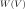
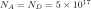
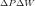
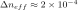
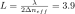
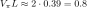
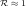
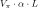
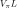

,
,  cm
cm ); a reverse-biased pn junction in a rib waveguide modulates them at tens of GHz with
); a reverse-biased pn junction in a rib waveguide modulates them at tens of GHz with  –2 V·cm in an MZI, or with a few volts in a compact ring.
–2 V·cm in an MZI, or with a few volts in a compact ring.Model
Drude-like response of free carriers (Soref and Bennett 1987). Three ways to change the density:
| mechanism | speed | VπL | note |
|---|---|---|---|
| injection (pin) | ~ns (τ) | ≈ 0.02 V·cm | high loss, needs pre-emphasis |
| depletion (pn) | > 50 GHz | 1–3 V·cm | standard in transceivers |
| accumulation | ~10–30 GHz | ≈ 0.2 V·cm | MOS capacitor in waveguide |
In depletion, the change of depletion width

(pn electrostatics) removes carriers overlapping the mode; holes give more per unit absorption than electrons, so the junction is offset towards the p side.
per unit absorption than electrons, so the junction is offset towards the p side.
Worked example
pn with

cm , 220 nm thick rib: from 0 to −2 V the depletion width grows by ≈ 40 nm, removing
, 220 nm thick rib: from 0 to −2 V the depletion width grows by ≈ 40 nm, removing 
holes per unit area; averaged over the mode,
. shift needs
shift needs 
mm →
V·cm (push–pull halves the length). Ring version: a resonance shift of 40 pm × (FWHM ~ 50 pm) gives ~6 dB modulation in a 10 µm ring.Detectors
Ge (gap 0.66 eV, strained to absorb up to ~1.6 µm) grown on Si: waveguide pin photodiodes with

A/W and > 50 GHz bandwidth (photodetectors).Engineering applications
100G–800G datacenter transceivers (MZM or ring modulators driven by CMOS), co-packaged optics, coherent IQ modulators in Si, optical phase arrays.
Pitfall
Carrier modulation always adds loss (free-carrier absorption) and chirp; the figure of merit is

, not
alone.